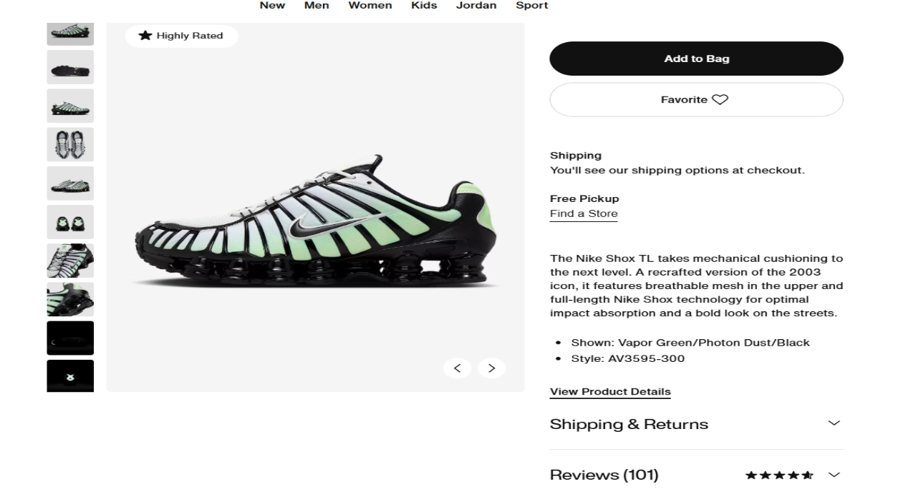
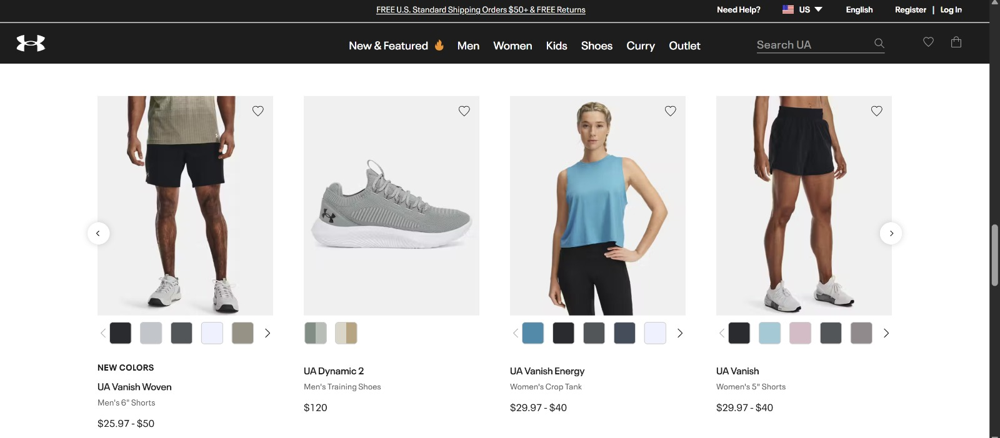
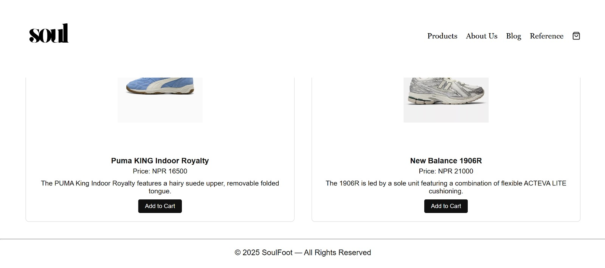

REFERENCES
|
The hovering effect in our website can be referenced from the image right to us. |
It's a screenshot of a website named calliber where on its home page itself there is a hovering effect for their new arrival products. |
|
The product details and favourite section is inspired from Nike's website. |

Its the screenshot from Nike's website which shows the style of Nike's product detail and favourite section that we have taken the reference from. |
|
The carousel is inspired from under armour's carousel uses. |

Its the screenshot from under armour's website which shows the use of carousel in their recommended products in the home page. |

Our navigation bar is inspired from appel's navigation bar from its website. |
Its the screenshot from apple's website which shows the names of different products in the navigation nar which makes it easier for the user to navigate through the website and find what the user requires. |
|

The footer is inspired from louis vuitton's footer from their website. |
Its the screenshot from louis vuitton's website where the footer acts as a visible reminder to users that the content is protected by the copywright law |